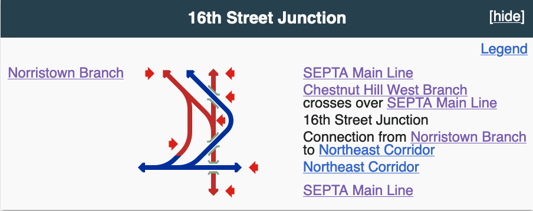

The third of the options from Lehigh Valley Passenger Rail Analysis is Allentown to Philadelphia via Norristown. This uses the same routing as the Lansdale alternative between Allentown and Lansdale so I won’t repeat any of that here.
North Philadelphia
The main issue with the Lansdale alternative is running through the Center City Commuter Connection, which means you’ll need dual mode locomotives (or consider a cross-platform transfer somewhere). The alternative is finding a way from Lansdale to 30th Street Station that avoids the tunnel, which means we need to have a sidebar about the railroad geography around North Philadelphia, because it drives the entire justification for this alternative. I’ve used the invaluable routemap templates on Wikipedia to create a diagram of what happens. In the below map, red lines are on the “Reading” side and blue lines are on the “Pennsylvania” side.

Three lines come down to the area from the north. From west to east they’re the Norristown branch, the Chestnut Hill West branch, and the SEPTA Main Line. They’re all approaching the Northeast Corridor, an east-west line. The Chestnut Hill West branch crosses over the SEPTA Main Line twice and forms a junction with the Northeast Corridor. The Norristown branch forms a junction with the SEPTA Main Line; the SEPTA Main Line then passes under the Northeast Corridor. This area is a heavily built-up part of North Philadelphia.
The problem we’re trying to solve is this: how do you get a train from the Reading side to the Pennsylvania side without (1) demolishing a few city blocks or (2) creating an at-grade crossing without snarling traffic.[1] The answer, as far as the study is concerned, is that there’s already a connection track from the Norristown branch to the Northeast Corridor. It’s freight-only, probably Class I, unelectrified, and running through what Google Maps says is an Aramark facility. This isn’t inspiring, but assuming it can be upgraded it satisfies both criteria. This leads to our next problem, which is getting a train from Lansdale on to the Norristown branch.
Lansdale-Philadelphia
The Norristown alternative incorporates the Stony Creek Branch (“Corridor S”). It’s 10 miles long, running north-south between Lansdale and Norristown. It hasn’t hosted passenger service in ages, but SEPTA acquired it in 1976 during the Reading’s bankruptcy for possible future use.[2] It’s only hosted freight since then, but it could be rehabilitated for passenger service.
Norristown is on the west end of the Norristown Branch. It’s double-tracked, electrified, and an important part of SEPTA’s regional rail network. It’s also, like the SEPTA Main Line coming from Lansdale, on the Reading side of the network. However, as mentioned, it’s possible to get from this branch to the Northeast Corridor without crossing any other tracks. That means you could have an all-diesel route from Allentown to Philadelphia.[3]
It’s not a new idea. The Stony Creek option was tossed around in 1999, before support coalesced around the never-implemented Schuylkill Valley Metro. It’s attractive because it lets you avoid the obvious if much more expensive option, which is to run wire along the Bethlehem branch and be done with it.
Scheduling
The study estimates 1 hour 52 minutes from Allentown to Philadelphia via Norristown, or 6 minutes more than the Lansdale alternative. The Stony Creek Branch is a wildcard; it’s curvy and hasn’t hosted modern passenger service. Scheduled commuter services, making all stops, need a little under an hour to get from Norristown to 30th Street via the tunnel, and about 15 minutes of that is between North Broad (the first station beyond the Northeast Corridor) and 30th Street. Even if the connector is slow, going direct from Allegheny to 30th Street will be faster.[4]
As with the Lansdale alternative, this is competitive with driving on I-476 between the two cities, especially considering the vagaries of traffic on the Schuylkill Expressway. Martz buses, making no intermediate stops at all, need an hour and a half as well.
Costs
Capital costs are estimated at $739 million, the highest by far of any of the alternatives. To the $443 million for rebuilding the Bethlehem branch you have to add $147 million for the Stony Creek branch. Rolling stock is estimated at $102 million, probably because the option allows straight diesels and not dual modes.[5]
Thoughts
I admit that I laughed out loud when I saw that the Stony Creek branch was on the table. It’s not that I’m opposed in principle, and the lack of radial lines is a weakness in SEPTA’s network. It’s just that these studies never include electrification because of the sticker shock. More generally, commuter rail operators (SEPTA aside) are hostile to electrification. MBTA won’t consider it for Boston-Providence service because they don’t want a mixed fleet; ditto MARC for its Baltimore-Washington trains. Also, they say Amtrak charges too much for power.
Notes
Lehigh Valley Passenger Rail Feasibility Analysis, p.17 addresses this. The Lansdale alternative would likely require such a connection across the Norristown branch. That’s a non-starter, operationally. ↩︎
Other freight-only lines owned by SEPTA include the Chester Creek branch, the Newtown Square branch, the Whitemarsh branch, and part of the Octoraro branch. ↩︎
p. 14. ↩︎
p. 27 ↩︎
p. 36 ↩︎